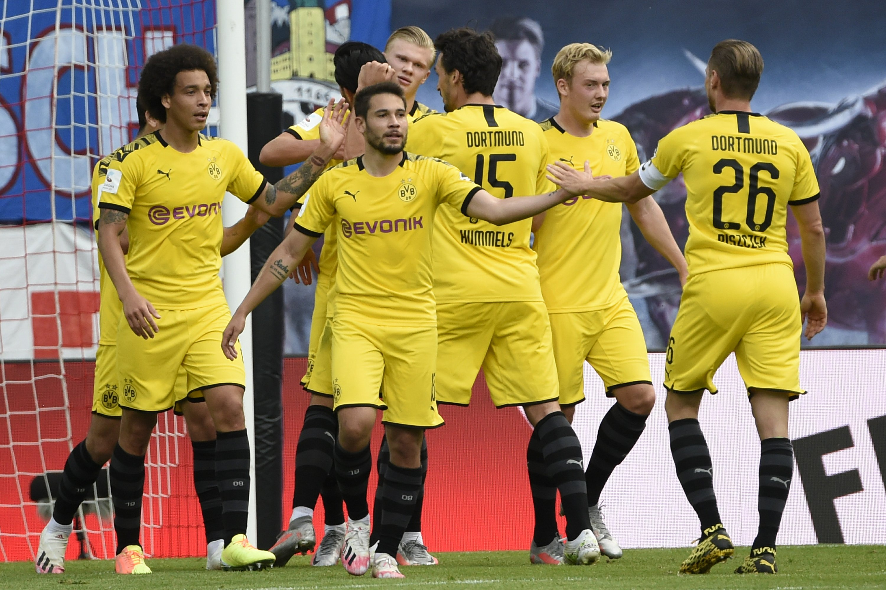
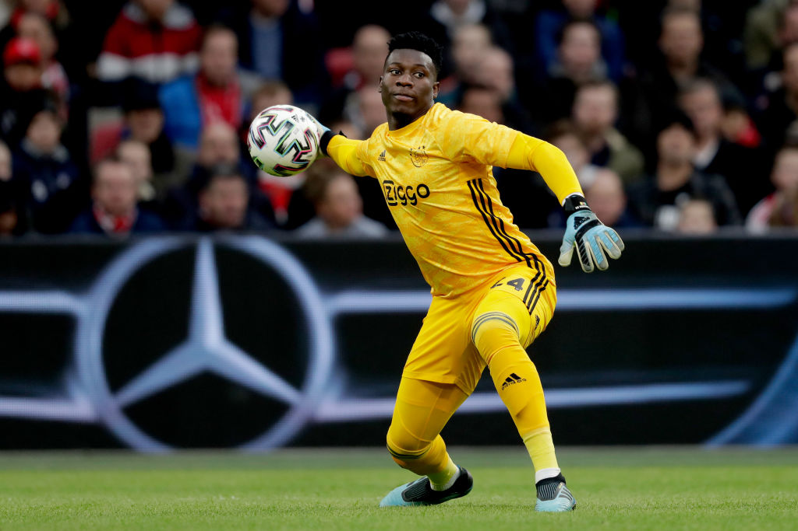
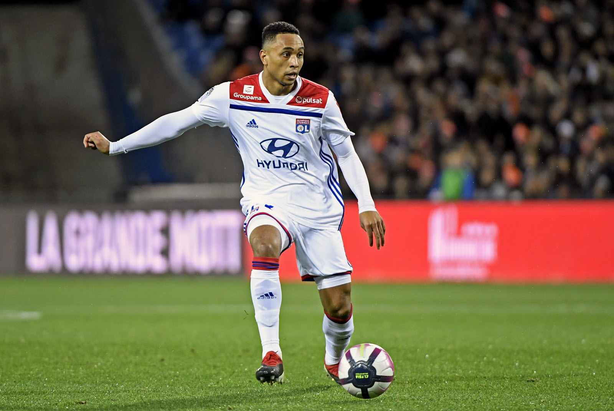
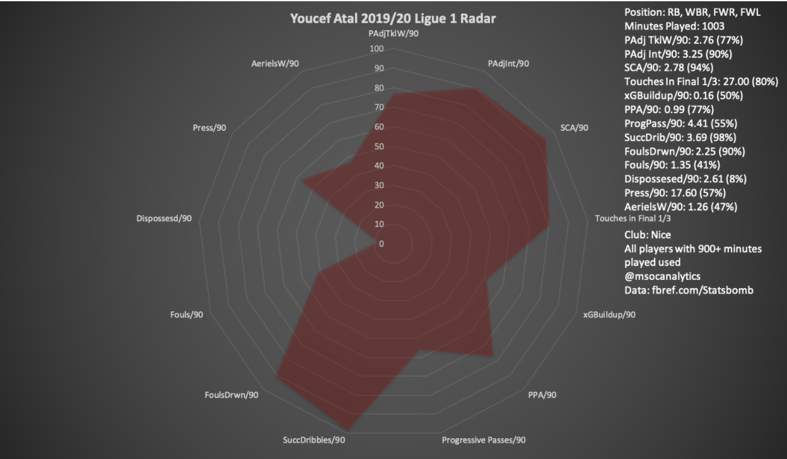

-
How can Dortmund Reload to Win the Bundesliga?
by Mitchel Green - June 24, 2020
|
mitchgr@umich.edu

source: AP
For the eighth consecutive season, Bayern Munich has won the Bundesliga title. After a relatively rocky start to the season - in which Bayern won five of their first ten matches - Niko Kovač was replaced by Hansi Flick, who won all but three games the rest of the way - including an 18 game unbeaten run - to win the title after a 1-0 win away to Werder Bremen.
The Bundesliga was a bit more packed at the top than it has been in recent seasons, with Dortmund, Leipzig, and Gladbach all being close to knocking off the champions before dropping off after the restart. While Leipzig and Gladbach will surely put up a good fight again next season, the former has just lost key man Timo Werner to Chelsea, and the latter’s young squad may be picked apart before its time to shine. That leaves Borussia Dortmund, who are likely to return most of their electric squad from this season, as the major challengers to Bayern next season.
But the squad still needs some work before they are ready to take on Bayern. Though they have one of, if not the, best attacks in the league, there are still some problem areas further back in the team. I will use data to try and identify some transfer targets for Dortmund this offseason. Some conditions before we get started: 1) I will only be suggesting players from the top five leagues and the Champions League as that is all I have data for (the perils of being a broke college student), 2) I will be looking for cheaper options as these are the options Dortmund are most likely to sign, and 3) for this exercise I will be assuming that Jadon Sancho is staying this summer and Achraf Hakimi is returning to Real Madrid as that seems most likely based on the latest rumors I have seen. We’ll take this position-by-position, and I’ll give a couple options for each. Now, on with the scouting!
Though he may pull off the occasional fantastic save, it is Roman Bürki’s time to go. He is serviceable, and probably worth keeping around as a backup, his shot-stopping ability is not where it needs to be to help Dortmund win the Bundesliga title - his post-shot expected goals +/- is -4.0, which is in the bottom 25% in the league. He also isn’t nearly as important in Dortmund’s possession play as he has been in previous seasons - his xGBuildup/90 is 0.16, which is the lowest it’s been since joining Dortmund in 2015. Dortmund should be looking for a goalkeeper that fulfills at least a couple of the following traits - plays the ball short, gets involved in possession, active outside of the penalty area, good shot-stopper. Let’s see who we can find:
Walter Benítez (Team - Nice; Age - 26; Value - €8 million)
He did come down slightly this season after reaching some ridiculous heights in 2018/19 - his post-shot xG +/- was a ridiculous +13.4 - but Benítez still led Ligue 1 this season in post-shot xG +/- on a per 90 basis. He was at +8.3 in total before the COVID cancelation, but it’s likely the Argentine would still have gotten close to his +13.4 from last season. He is also used to playing in a more possession based system with Nice, getting involved in buildup - seen in his xGBuildup/90 of 0.17 - and playing a short passing game like Bürki - seen in his average passing length of 27.6 yards. A shortcoming seems to be that he isn’t that active outside of the penalty area - making 0.35 defensive actions outside of the penalty area per 90. Now, I don’t have a lot of video of Nice to see why this is, so I don’t know if this is because of him or just the way Nice play. However, I think the other metrics I’ve listed and his low price tag warrant looking in Benítez’s direction.
André Onana (Team - Ajax; Age - 24; Value - €36 million)
Unfortunately I don’t have any Eredivisie data to look at the Cameroonian goalkeeper - and don’t even think I’m going to pay $5 a month for ESPN+ to watch him. Thankfully, Ajax have played enough matches over the last two seasons in the Champions League that we have a large enough sample set on which to judge André Onana. Unfortunately, that price tag is probably too much for Dortmund to go after him, but that doesn’t mean he shouldn’t get a look. After all, he seems like he’d be a perfect fit. An excellent shot-stopper with a post-shot xG +/- of +9.2 in 18 matches over the past two seasons in the Champions League. He’s also exactly what Dortmund would want in possession, playing plenty of short passes and being used to playing in a possession based system. He’s active outside of the penalty area as well, making 0.50 defensive actions per 90. Again, I think he’s too expensive for Dortmund to go after, but he’s definitely an interesting option if the club is willing and able to shell out the cash.

source: Getty Images
Like Bayern, Dortmund struggled early in the season - winning just five of their first 12 matches. The pressure was mounting on Lucian Favre, but a midseason switch to a 3-4-3 system stabilized the side and was able to get the best out of them. It’s likely Favre will want to continue using this system, so upgrades at center back will be a must going into next season. Łukasz Piszczek was very good this season - progressing the ball well and doing well defensively covering for bombing wingback Achraf Hakimi - but he is 35 years old now. The fullback-turned-centerback’s leadership will still be useful next season, but it’s probably time to move on in an on-field sense. Dortmund will want someone who is younger, right-footed, can progress the ball well, and can defend in wide and central areas. Let’s see who we can find:
Zeki Çelik (Team - Lille; Age - 23; Value - €16 million)
Okay, Çelik has been playing as a fullback and not a centre back for Lille this season. However, I think it’s worth taking a look at him because his metrics look very similar to Piszczek when he was playing as a fullback. I think if Dortmund are looking for someone in that mold, Çelik fits it, and his talents could transfer well to that role. Like Piszczek, he’s an excellent progressor of the ball who is highly involved in buildup play - with 8.70 progressive passes per 90 and an xGBuildup per 90 of 0.28. He’s somewhat active in winning the ball back in the wide areas - with 2.69 tackles won and 1.82 interceptions per 90 when adjusted for possession. These numbers are all similar to Pizcezk’s, and if Dortmund wanted to switch back to a back four, Çelik seems like a great option to slot in on the right side. Although he would be short for a central defender at a little under 5’11’’, it’s only an inch shorter than Pizcezk, and I think it might be worth taking a look at him and see if he might work as a right-sided centre back in a three man defense.
Kenny Tete (Team - Lyon; Age - 24; Value - €5.5 million)
Unlike Çelik, Tete actually does have some experience playing at center back. Although he plays mainly as a right back or right wingback for Lyon, Tete has been deployed at center back many times throughout his career. He’s about the same height as Çelik, and is similarly good in possession - with 8.24 progressive passes per 90 and an xGBuildup per 90 of 0.31. He is also very active defensively - with 3.95 tackles won and 3.01 interceptions per 90 when adjusted for possession. A knock against him is that he hasn’t played a ton of minutes for Lyon - notching just over 1000 minutes in each of the last two seasons. However, he could thrive if given more minutes in a system that suits him. Because of his build, versatility, skills in possession, and defensive qualities, he could be a good, cheap replacement for Pizcezk.

source: Stéphane Guiochon
Right Wing Back
This will probably be the hardest position to replace, not because there aren’t suitable players, but because of how great Achraf Hakimi is. He was unleashed this season when given full license to get forward as a wingback in the 3-4-3. His creative influence will be hard to replicate if he ends up returning to Real Madrid this summer, but there are definitely some options. Let’s see who we can find:
Youcef Atal (Team - Nice; Age - 24; Value - €20 million)
Though the Algerian suffered a serious injury to his knee in December that kept him out the rest of the season, he can hopefully come back stronger than ever. Atal was used mainly as a winger or fullback in 2019/20, but he burst onto the scene in 2018/19 playing as a wingback. This is where his talents are best utilized. In this position, he was able to influence the game via his passing, progressing the ball well and creating chances - 4.42 progressive passes, 0.12 expected assists, and 2.98 shot creating actions per 90. He was also extremely active in the defensive phase - with 2.36 tackles won and 4.08 interceptions per 90 when adjusted for possession. Like Hakimi, he’s also shown an eye for goal - scoring six non-penalty goals from and xG of 2.7 in 2018/19. Even this season he’s still doing well in most of the metrics you would want a wingback to excel in despite playing all over the field. As you can see in the radar below, he still ranks above the 90th percentile in possession-adjusted interceptions, shot creating actions, successful dribbles, and fouls drawn per 90. He seems the most like-for-like replacement for Hakimi that I could find, and he’s definitely an option that I think Dortmund should look at.

Max Aarons (Team - Norwich; Age - 20; Value - €20 million)
This one might be reaching a bit. If he leaves Norwich this season, and I think he will, it’s likely the upper echelons of the Premier League will get into a bidding war for him and drive up his price. He also doesn’t play as a wingback, but rather an attacking fullback. But if Dortmund can get him for cheap, I think his talents could translate well into that wingback role. He doesn’t get as many touches in the final third as Hakimi or Atal, but I think if he did he would have more similar numbers to those two. Even so, he’s still a creative threat - with 0.13 xA and 1.81 shot creating actions per 90. Young English players have done well developing in Germany recently, and maybe Aarons will join them.
Conclusion
I have no doubt that whoever Dortmund brings in this offseason will be excellent. They have one of the best recruitment teams in the world, and access to way more than just the six leagues that I do. However, if Dortmund are looking to strengthen these three positions this summer, perhaps they should give some of these players a look.
Data from Statsbomb via fbref.com, understat.com